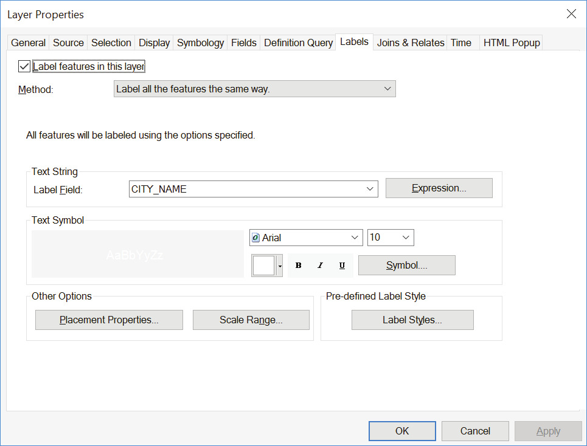
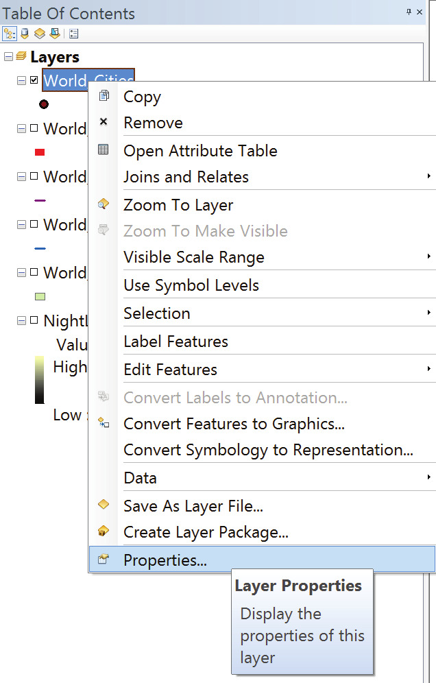
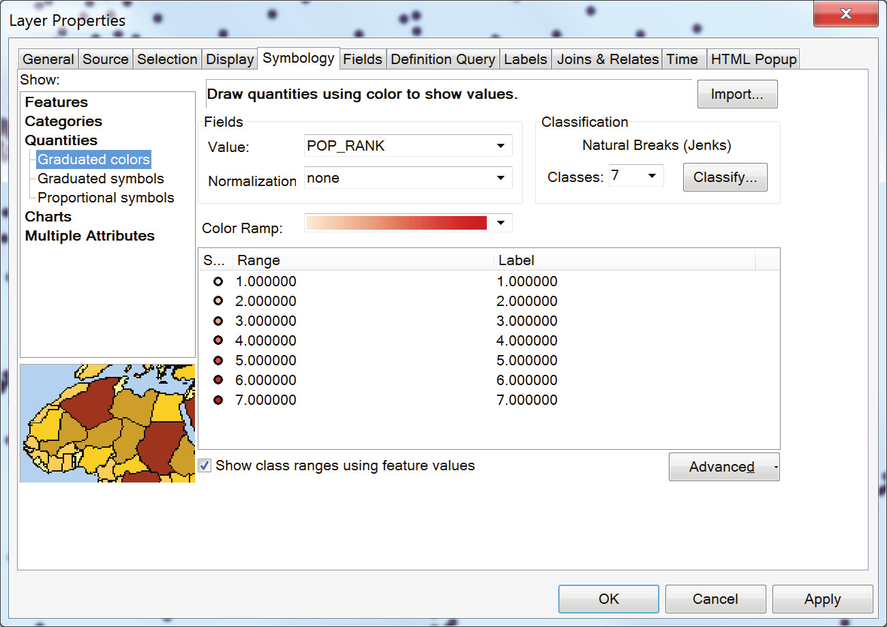
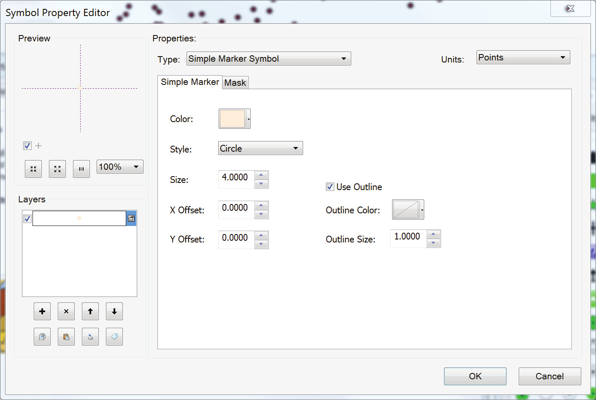
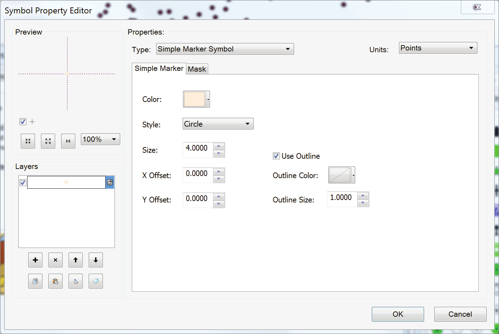
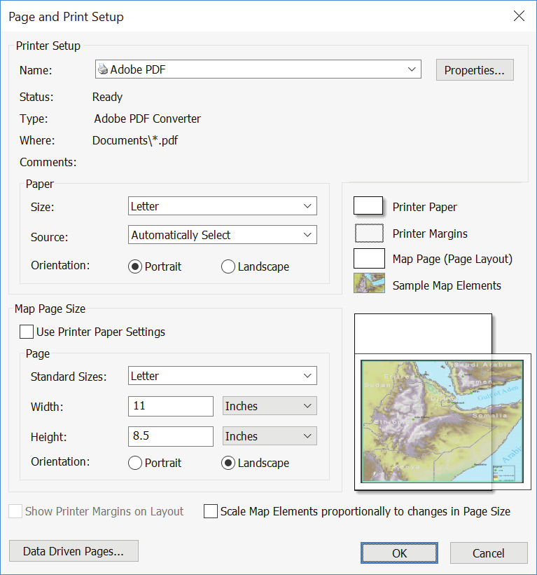
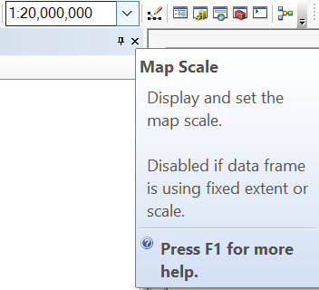
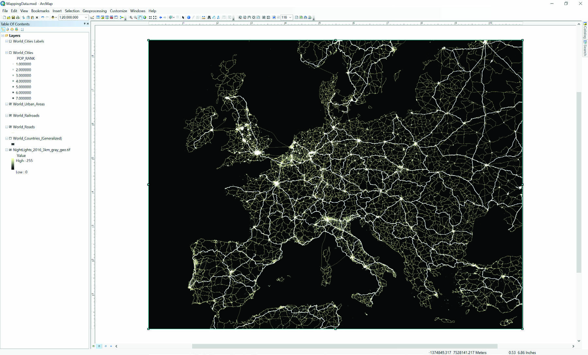
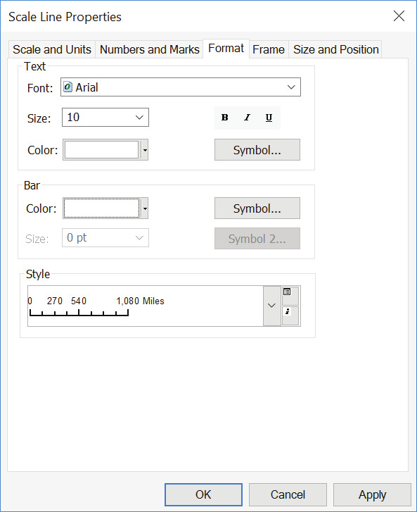
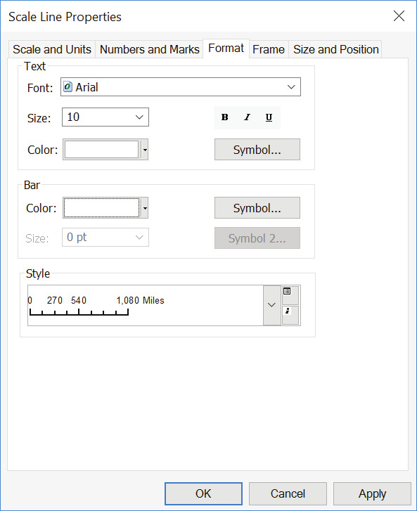

Overview
The act of mapping serves multiple purposes. More than the graphic and geographic visualization of spatial information, it is a critical, analytical, and interpretive act. Mapping and GIS-based visualization contribute to knowledge formation, decision making, and community representation.
Cartographic choices can both reinforce and challenge how the city is seen, how its spaces are understood, and how (and by whom) its resources are accessed. The map carries the implied weight and trust of expertise. When that map also contains quantitative and/or statistical information, it is often read as a representation of objective truth.
As such, mapping data is a powerful tool in urban design—to inform decisions, to persuade in support of advocacy efforts, and to clarify and explain the spatial experiences and priorities of different groups.
Objectives
After completing this exercise, students will have:
- Learned the basics of visualizing vector and raster data types
- Learned the basics of map symbology and composition
- Answered simple comparative spatial questions
- Explored differences in qualitative and quantitative mapping
Further, students should be able to:
- Symbolize features as well qualitative and quantitative data
- Describe the components of a shapefile
- Access summary statistics within a feature class attribute table
- Join attributes from one dataset to another via a table join
- Query a GIS feature class based on attributes within its table
- Export selected features to a new feature class
- Classify quantitative information within GIS software
Deliverables
Exercise Questions. Answer all of the questions contained in the exercise, explaining how you got your answer. Record your answers in a simple table like the one below, saved as a CSV file.
| Q | A |
|---|---|
| 1.1 | There are 5,280 feet in a mile. |
| 1.2 | Raster and vector. |
| ... | ... |
Map. Use the techniques outlined in the exercise to produce a map of the world on a single 11x17 layout, saved as a PDF. See the note at the end of the exercise for detailed instructions.
Name all deliverables yourUNI_exerciseN, substituting your UNI, the current exercise number for N.
When you are finished with the exercise questions and map, place both files inside a ZIP archive named with the above convention (ex. ccr2139_exercise1.zip) and submit through canvas.
Setup
Download and unzip the exercise package to a convenient location on your computer.
As always, it's important to back up your work. If you're not doing so already, use the Google Backup and Sync utility to set up automatic backups to your Columbia Google Drive account.
File management isn't anybody's favorite subject but it is critical to stay organized when working with spatial data. GIS software works by linking to data stored separately from the project file on your file system, much like InDesign and most video editing and motion graphics software. If files move or disappear, the links will break and you'll waste time relinking them or even repeating work unneccessarily.
To avoid this, you should set up a project folder with a well-organized system of subfolders to keep track of your files whenever you start new work. The exercise packages for each assignment are already set up for you, and for the sake of following along in the instructions you should leave these as-is. But feel free to experiment with whatever works best for you once you're working on your own!
Finally, be aware that spaces and dashes in your file names can cause some of ArcGIS's processing algorithms to fail. To be safe, avoid using anything other than upper and lower-case numbers, digits and underscores.
Working With Vector Data
Let's look at what's in our folder. Navigate to the /mapping_data/data folder in your file browser and look inside vector.

You'll see a mess of files with different names and extensions. If you sort the list by name, groups with the same name will appear. Each group is a shapefile, a standard GIS vector file format. Counterintuitively, the word shapefile actually refers to a group of three or more files with the same name but different extensions. Taken together they encode exactly one feature class. GIS software treats this feature class as a data source for a single layer. The three file extensions required to make a shapefile are:
- .shp contains geometric information or “shapes” as points, polylines, or polygons.
- .dbf is a table of attribute information, qualitative or quantitative, corresponding to the features in the .shp file.
- .shx provides the index information for the feature geometry.
Depending on the case, you might also see:
- .prj tells the software about the coordinate system and projection used for the geometry.
- .xml contains shapefile’s metadata.
- many more See this article for a full list.
A Better Way to View Data Sources
Without question, GIS data can be cumbersome (and these shapefiles represent some of the least complex GIS data types). Thus, we will work with ArcCatalog when using ESRI’s ArcGIS. ArcCatalog is a file directory program (like Windows Explorer or Apple’s Finder) specifically designed for GIS files. It will recognize GIS data as such and package the multiple related files together. It will also allow you to preview your data before adding it to a working ArcMap project.) Close Windows Explorer.
Open ArcCatalog by clicking through the “Start Menu > ArcGIS > ArcCatalog.” Click the “Connect to Folder” button (left) and navigate to (and highlight) the \01MappingData\ folder. This will establish the “01MappingData” folder as a working directory for us, giving us access to the data in its subfolders. (Establishing which directories are “working directories” is a common feature of many data-related software packages.)
When you have selected the folder, click OK.
Notice that once you have connected to the folder, it is present in the left panel of the ArcCatalog interface, called the Catalog Tree. From here, you can inspect its GIS-related contents using the three tabs in the right panel: Contents, Preview, and Description.
Navigate to the /mapping_data/data folder in ArcCatalog and look inside vector again. This time you'll see each shapefile represented as a single item, with its data type indicated by an icon. In ArcGIS, icons for the six basic data types look like this:

Adding Data Sources to the Map
What if we want to actually see the geometry in one of these datasets? We need to put it on a map. Open ArcMap. If you are prompted to choose an ArcMap project to open, you can either chose a New Blank Map or click Cancel to dismiss the initial dialog box.
The project file is a space for working with spatial data. Think of it as a worktable, or a site. Here you'll arrange materials (data) and manipulate them with tools (algorithms) to make something useful.
Remember that the project file is not the map, nor does it contain the data used within the project. Rather, within the project file, data sets can be layered, analyzed, created, and edited. Multiple projects may reference or include a single dataset without duplicating the data. As a result, changes made to a dataset in one ArcMap project are reflected in the other projects linking to it.
Take a moment to familiarize yourself with the ArcMap interface. At a minimum, you should see the Standard Toolbar and the Tools Toolbar docked at the top of the interface. If you do not see them, you can access your toolbars by right-clicking in the toolbar area of the interface or by clicking through “Windows > Toolbars.” (You can dock a floating toolbar by dragging and dropping it in the toolbar areas on the top, bottom, or sides of the interface.)
Standard Toolbar

Tools Toolbar

On the left you'll see the Table of Contents and on the right there are tabs for Catalog (basically an embedded version of ArcCatalog within ArcMap) and Search. The blank white area in the middle of the window is showing the (empty) contents of the Data Frame labeled Layers in the Table of Contents.
Add Data
To add a data layer to your project, click the Add Data button on the Standard Toolbar, or right-click on “Layers” in the Table of Contents and choose “Add Data...”
In the Add Data dialogue box, navigate to the vector data folder we last saw in ArcCatalog. (You may need to establish the “01_MappingData” folder as a working directory once again by clicking the Connect to Folder button.)
Select the “World_Cities.shp”, and click “Add.”

Points representing cities should appear in the Data Frame. Each feature in the feature class is symbolized with the same arbitrary symbol/color. Move your cursor around in the Data Frame. Observe that as the position of the cursor changes, ArcMap displays its current coordinates in the lower right corner of the window.
Here the coordinates are represented as meters from the data frame's origin (0,0) because the dataframe's projection uses meters for its units. We'll talk more about projections later, but for now, there are two things you should know:
- It is important to know the units of measure used in a data layer’s projection.
- By default, the coordinate system and projection used in an ArcMap project are determined by the first layer added. Layers added later may be recorded in different coordinate systems, but they will be re-projected “on-the-fly” when added to the project file to match the project settings.
The coordinate system used in your project is an attribute of the data frame. You can change it in the data frame properties, accessed by right-clicking “Layers” and choosing “Properties..." Click the “Coordinate System” tab and set the projection to “Predefined/ Projected Coordinate System/World/WGS 1984 World Mercator.” Click “OK.”

Save Your Project
Before we move on, let’s save our ArcMap project.
First, recall that the data layer we’ve added is linked (not embedded) to our source shapefile. As most of you will be working on different computers or drives at different times, it will be more convenient to Save Relative Path Names rather than “absolute” path names to our linked data. This decreases the likelihood that opening the project on a different computer will result in broken links because ArcMap can’t find the name of the drive where you were previously working.
To save relative path names for your data layers, click through “File > Map Document Properties” to open the Map Document Properties dialogue box. There, check the Pathnames option to Store Relative Pathnames to Data Sources. Click “OK” to save the option.

Finally, save the file under mapping_data/project_files as mapping_data.
The Attribute Table
We learned in lecture that each feature in a feature class is represented by geometry and by attribute properties. We can access these properties through the Attribute Table.
To access the Attribute Table of the world_cities layer, right-click the layer name in the Table of Contents and select “Open Attribute Table.”

Scroll horizontally to see the fields included within the attribute table. Notice we have country information, as well as city status, population, population rank, etc.
To quickly identify which point corresponds to a given feature within the attribute table, you can interactively select a feature by clicking on the button to the left of any row. This will highlight the feature in the attribute table and in the data frame in cyan.
Additionally, notice that immediately beneath the table, the panel includes text explaining that “1 out of 2540 [features are] Selected.” From this we can quickly gather the total number of features in the feature class.
To keep your workspace uncluttered, you can dock the Table panel (if it appears floating) by clicking and dragging it within the ArcMap interface. You can use this function for any toolbar or panel in the ArcMap interface.
Clear your selected feature(s) by clicking the Clear Selected Features button on the Table Panel or on the Tools toolbar, or navigate to menu item “Selection” and choose “Clear Selected Features.”
Identify Feature Attributes
We can also access attributes per feature interactively through the data frame’s map by using the Identify Tool. With the Identify Tool, click on a single feature point. A new panel will appear with the values of each field in the Attribute Table for that specific feature.

Selection
Next, we will display the names of the most populous cities on the map (with populations greater than 5 million). In order to do so, we will first select the features representing those cities (population rank = 1). Open the layer’s attribute table. Right-click on “POP_RANK” and choose “Sort Ascending.” Notice that the World Cities features are now sorted by their population rank from 1 to 7 (by default, features are sorted by their unique object IDs in the “FID” field).

Interactively select all features with population rank 1 by clicking its rows in the Attribute Table.
Select By Attributes
Another selection technique is to directly query the Attribute Table based on the fields and values within the database. We will select the same features one more time using this method. Clear your selection using the Clear Selection button.
Click on the main menu item “Selection” and choose “Select by Attributes...” We will use the population rank field as the basis of a simple query.

Take a moment to thoroughly read the options in the dialogue box. You’ll notice that the first option asks you to choose from which layer in the ArcMap project you would like to select features. We would like to select specific features from the World_Cities layer. Choose this one from the drop-down menu.
As soon as you specify the Cities layer, you should notice that the names of the Attribute fields (the columns in the Attribute Table) populate a list. The second option asks the Selection Method. Again, take a moment to familiarize yourself with the options here, many of which are often useful. For now, we would like to Create a New Selection.
Now, notice that the bottom text box is labeled “SELECT * FROM WorldCIties WHERE:” Here, the dialogue is asking that we build a simple statement clarifying which features we’re looking for in the Attribute Table. In short, every feature in the WorldCities attribute table where our expression is true will be selected. In our case, we know we want to select the features which have a value of 1 in the field labeled “POP_RANK.” We will build that statement using the options in the dialogue box.
Double-click the field name “POP_RANK” in the list of fields. You’ll notice that the lower panel is automatically populated. Click the equal sign ( = ) button. Again, notice that the equal sign is added to the lower panel.
With the “POP_RANK” entry still highlighted in the list of field names, click the “Get Unique Values” button. This will add a list of all of the values available in layer’s Attribute Table within the highlighted field. Double-click ‘1’ in the list of options.
Syntax here is important, as is punctuation and spacing. Until you are more experienced with this dialogue (or unless you have SQL experience in general), we strongly suggest that you always click rather than type in this dialogue. The one exception is if you make a mistake: in that case, highlight and delete everything in the lower text box and begin again.
Verify that your query expression is correct and click “OK.” Once again, same features should be selected in the map and in the Attribute Table.
Creating New Layers from Selections
With the most populous cities still selected from the previous step, right-click on the world_cities layer and then through “Selection > Create Layer From Selected Features.” When prompted, click "Yes" to add the new layer to your dataframe.

This operation will add a new layer called world_cities selection to the dataframe, but it uses the same shapefile as the original as its source. Click on the new layer's name twice to rename it to world_cities_largest.
An entirely new shapefile can also be created from the features in the selection. Although there are other ways to use a subset of data for processing and visualization, this technique can sometimes help improve performance and keep your data organized.
To do this, right-click the layer, choose Data > Export Data and follow the steps in the prompt.

Adding Attributes From Another Layer
One way we can start to create connections between datasets is through a join. Joins use two data layers – a target layer and a join layer – to create a new version of the target layer with additional attributes taken from matching attributes in the join layer.
In a table join, that relationship is defined by a common attribute field. We'll try this using our world_cities layer as the target, and the file world_cities_nicknames.csv as the join layer.

To create the join, right-click world_cities and select Joins and Relates > Join. For now we want to "Join attributes from a table" in the first drop-down. Select CITY_NAME as the target field in drop-dow for item 1, then navigate to the world_cities_nicknames file in your project folder under item 2. Finally, select CITY_NAME again for item 3. Select "Keep All Records". Click "Validate Join" to check the results and click OK to perform the join.
Open the Attribute Table and scroll horizontally all the way to the right. You'll see two new fields including NICKNAMES for the 30 most populous cities. Like the Layer from Selected operation above, the results are just a view taken from the original data sources. If you want to create a new shapefile with the newly joined attributes included, you can save it as a new layer.
Working with Raster Data
We can add raster data to the map the same way we do vectors.
Toggle all layers off except “NightLights20163kmgraygeo.tif.” This is the only raster dataset we are working with in this exercise. We will work with rasters in greater detail in future exercises. For now, bare in mind that a raster consists of a matrix of cells (or pixels) organized into rows and columns (or a grid) where each cell contains a value representing information, such as elevation or the amount of light emmitteed at night-time.
Night-Time Lights imagery has been embraced by a large number of institutions as a proxy for urbanization, density, and economic growth, among others. This is highly debatable, but we will nevertheless proceed assuming the data represents areas of concentrated urbanization.
Your map should now dispay the names of the most populous cities within the map.

Right-click NightLights and choose “Properties...” Click on the Symbology tab. A slightly different dialogue box will appear from the one that we’re used to when working with shapefiles. There are several different methods of rendering raster data. We will use “Stretched.” The Stretched renderer displays continuous raster cell values across a gradual ramp of colors.
Choose the Stretch Type “Minimum-Maximum.” Click “Display Background Value” and leave value at “0.” Right-click on the Color Ramp and choose “Properties...” Set “Color 2” to yellow and click “OK” all the way out (feel free to experiment more with these settings).
Next, turn off world cities layer and urban areas layer. Right-click “WorldUrbanAreas” and open Attribute Table. Notice that only ordinal data (rank) is available should you want to choose colors by it. Close Attribute Table and right-click “WorldUrbanAreas” again. Choose “Properties...” and click on Symbology Tab. Use the symbol swatch to set the fill color to desired color. Set the outline color to “No Color.”
Turn on railroads layer. Right-click “WorldRailroads” and choose “Properties...” Click on the Symbology tab and use the symbol swatch to choose color and line weights. Repeat the steps for “WorldRoads” layer. HINT: You might want to represent roads, railroads, and urban areas as componests of a single system, and hence, assign similar color values to all three layers.
You should by now be familiar with basic GIS data types, selection techniques, and symbology methods.

Map Design
Having familiarized ourselves with the information in the World Cities shapefile, we can now set up our map by including other layers and start experimenting with map design. Given the mapping challenge we are trying to tackle, what other geographic features can we use as a proxy for representing urban condition?
In other to create an effective map, we might also include features that provide context to our map. In that case, what features shoud be highlighted and which should remain in the background? Think about those arguments and hierarchies as you proceed to the next step. We will start by adding:
- A polygon feature class of world countries
- A line feature class of world roads
- A line feature class of world railroads
- A polygon feature class of world urban areas
- A raster file of the NASA-NOAA global light emissions and reflections, also known as the “Earth at Night” or the “Night time lights” image
Note: We will bear in mind the exact spatial reference for the file, such as map projection, coordinate system, and datum).
cover georeferenced raster files in greater detail in future exercises. For now, that raster files can be spatialized (include all information necessary to establish
Using the “Add Data” button and dialogue box, add WorldCountries(Generalized).shp, WorldRoads.shp, WorldRailroads.shp, and WorldUrbanAreas.shp from the “00DATA\ vector” folder, and NightLights20163kmgraygeo.tif from the “00DATA\raster” folder.
Layer Order
Once again, each of the layers will be arbitrarily assigned a single color symbol. Also, depending on the order in which your new layers are added to the project, you may not be able to easily see each of them. You can rearrange your data layers’ order by clicking and dragging the layer names in the ToC (be sure that the “List by Drawing Order” option is selected in the ToC Panel).

Rearrange the layers such that (from top to bottom) they are ordered: World Cities, World Urban Areas, World Railroads, World Roads, World Countries, Earth at Night. You can toggle the visibility of layers by checking and unchecking the box next to their names in the ToC. Uncheck all layers except World Cities. Save your ArcMap project.
Labeling Features
Right-click on “WorldLargestCities” and choose “Properties.” Click on the Symbology tab (Features/Single Symbol) and using the Symbol selector and Symbol Property Editor set both the Color and Outline to “No Color.” This operation will make the layer invisible on out map.
Label text strings are derived from one or more feature attributes. Labels are dynamic, so if feature attribute values change, the labels also change. In our case, will label features with text strings derived “CITYNAME” field. With “WorldLargest_Cities” Layer Properties window still open, click on the “Labels” tab. Check the “Label Features in this Layer” box. Set Label Field to
“CITY_NAME” and choose the desired font, text color, and size. Click “OK.”
Symbology
We are now entering the design phase of our first mapping project. First, we will change the appearance of the World Cities Layer. Right-click on the layer name in the ToC and click Properties to access the Layer Properties dialogue box.
Under the Symbology Tab, you will find the various symbology options. Take a moment to read the dialogue box options. On the left panel, the user can choose to “Show” Features, Categories, Quantities, Charts, or Multiple Attributes. The first option (Features, shown as single symbols) is always the default, but we will choose to show quantities via different symbology approaches. Our goal is to establish hierarchy among the features in the class.
Open layer’s attribute table and once again observe the information stored in various fields. Note that some fields contain nominal information, and others contain quantitative information – e.g. population rank (POP_RANK), which ranks cities from 1 (most populous) to 7 (least populous). We will represent those values using color gradients.
In the Symbology Tab window, click on “Quantities” and make sure that “Graduated Colors” is selected. Set the “Value” field to “POP_RANK.” Under “Classification,” set the number of classes to 7. This will ensure that each class has a different color assigned. Right-click on any of the values in range and select “Properties for All Symbols...” Double-click on the circle under “Current Symbol,” which will open the Symbol Property Editor. Set the circle size to 4, and outline color to “No Color.” Click “OK” to close the Editor and Selector.
 

Next we want to choose a color gradient in order to render more populous cities brighter on the map. Right-click on Color Ramp and choose “Properties...” The Edit Color Ramp dialogue will appear. Set the Color 1 to light gray, or choose a different color combination. For this exercise, a simple grayscale ramp will suffice.
TIP: While ArcMap is not a design software, there is a surprising amount of flexibility built in to alter the appearance of a feature symbol. Even though you might want to finalize the design in Adobe Illustrator, we encourage you to explore the options available through the Edit Symbol button and other options.

When you are satisfied with the symbol and colors you have chosen—you can always return to these dialogue boxes to make changes—click “OK” to return to your project.
Next, we will change the color of the data frame’s background (which is serving as the color of the area not covered by the point features). To access the Data Frame Properties dialogue box, right-click anywhere in the data frame area of the ArcMap interface and choose “Data Frame Properties.”
Set the Border to “None” and Background color to black. Click “OK.”

Finally, turn on the World Countries layer’s visibility by rechecking the box next to the layer’s name in the ToC. Change the countries’ appearance on the map by changing its symbol. Give the features dark gray fill color and no visible outline.
Layout View
The ArcMap interface’s data view is useful when conducting analysis. When we need to compose a map, we must switch interfaces to the Layout View. Using the buttons on the lower left of the data frame, toggle between Data View and Layout View.

Notice that Layout View places the contents of the data frame onto a “page.” By default, this should be an 8.5” by 11” standard US letter sheet. Page size and orientation can be changed in Page and Print Setup. Navigate to menu item “File > Page and Print Setup.” In the dialogue window, uncheck the “Use Printer Paper Settings.” Change the orientation to “Landscape” and leave the paper size 11” x 8.5.” Click “OK.”
In layout view, the size and location of the data frame can be changed using the transform controls surrounding the data frame. If necessary, you can use the Select Elements tool on the Tools toolbar to select the data frame. Notice also that your other tools (e.g., zooming and panning tools) will operate as they did in the Data View—zooming and panning within the data frame.
Note that a new toolbar is activated in layout view: The Layout Toolbar. This contains many tools similar to those of the Tools toolbar, except they operate on the “page” rather than on the data frame. For example, panning with the Layout Pan tool will not affect the cartographic data within the data frame, but will pan around the layout page.
Resize and position your data frame on the page, zooming and panning to desired place on the map. Set the scale between 1:15,000,000 and 1:20,000,000.
Adding Graphic Elements
For our purposes, most maps we produce in these exercises is expected to include the following map elements:
- A scale bar
- A legend, with pertinent information A descriptive title Labels
- Pertinent data sources
Let’s begin by adding Scale Bar. To create a scale bar, click on the menu item “Insert > Scale Bar.” The Scale Bar Selector dialogue box will appear. Choose a scale bar style, and click “OK.”
To alter the scale bar’s appearance or units, right-click on the scale bar and click Properties to open the Scale Line Properties dialogue. If it is not already set to report the scale in miles, then change the Division Units (under the Scale and Units tab) to Miles. Although our data is projected and calculated in meters, at the scale of the continent describing the distances represented on the map in meters would be cumbersome and confusing to most readers.

The “best” choices for other options will vary depending on which scale bar style you have chosen. Take some time to test out different options (e.g., divisions, marks, frame, and background) by making changes in the Properties dialogue box and clicking Apply. When you are satisfied with the appearance of your scale bar, click OK.
TIP: Once you are familiar with these options, you can access the Properties dialogue box from the Scale Bar Selector dialogue (when you initially insert a scale bar) by clicking the Properties button (above).
TIP: You can adjust the values in your scale bar by resizing it within the layout. With this you can size the scale bar such that it reports round numbers (which are easier to read). Save your ArcMap project.
 

Exporting A Map
There are several file type options for exporting a map from the Layout. Saving to a vector format (EPS, AI, etc) will preserve the vector geometry of your layers for further editing. Given that you also have a imagery on your map, you might consider exporting only the raster data of the map as JPG or TIFF and compiling them with vector data in another program.
When you are ready to start exporting, turn off all layers except the NightLights. Click through “File > Export Map.” In the dialogue box, choose where to save the map by navigating to the “\01_MappingData\Outputs\” folder. Save as type: TIFF, and set the resolution to 150dpi. Click “Save” (Before you do that, you might consider temporarily dragging the scale bar off the page so it doesn’t appear on your exported tiff).
Next, turn off NightLight layer and turn on railroads, roads, and urban areas. Click through “File > Export Map...” Save as type: AI. Open AI file in Illustrator. Place the NightLights image in the background and align layers. Adjust the colors, lineweights and transparencies. Save file as PDF.